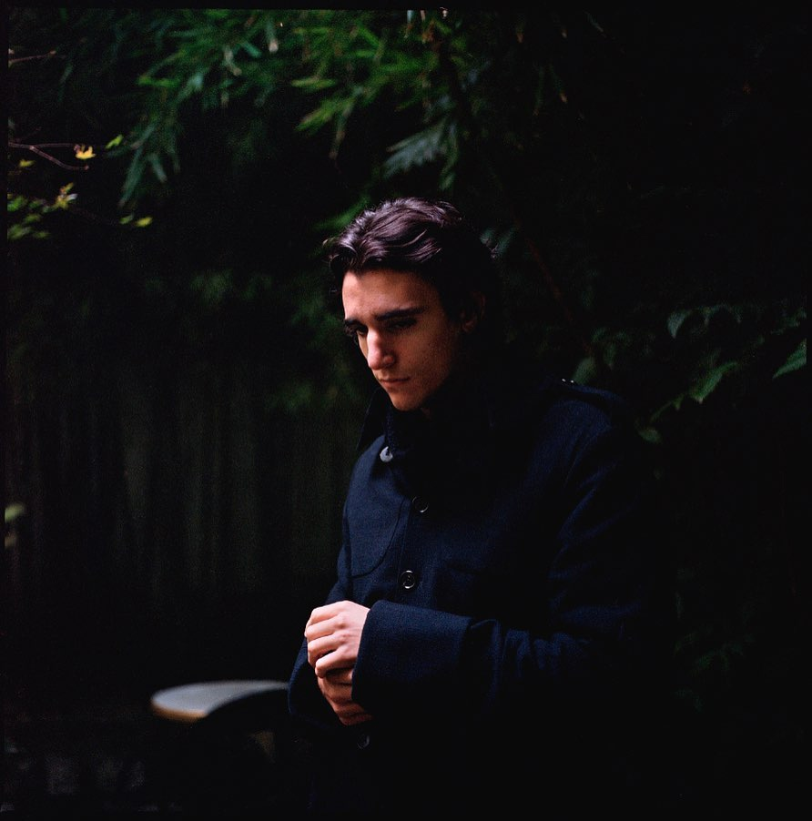

Tamino-Amir Moharam Fouad, better known as Tamino, is a Belgian singer and songwriter, who also has Egyptian and Lebanese ancestry. Tamino’s deeply felt, hypnotic music is a fusion of Western baroque pop and indie and old Arabic musical traditions, which creates the unique sound.
Reasons to listen to Tamino
Amazingly wide vocal range from moody low vocals to falsetto which can elevate into moments of transcendence
Imagistic poetry in the lyrics which is open to interpretations. The lyrics of all songs you can find on genius.com
Beautifully written, melancholic music where two worlds, western and eastern, meet. Tamino recorded his debut album Amir with the orchestra Nagham Zikrayat, predominantly made up of musicians from the Middle East
Mind-blowing, exciting live improvisations
Fan accounts
tamino_archive
Fan account with Tamino's performances and interviews. Video encyclopedia of Tamino on Youtube
soulvoltage
The account with impressive author's writings, exclusive photos and videos
Tamino fan's community on vk.com
The community in russian-speaking internet with the biggest collection of photos
taminofocacciaposting
The account with funny memes
singformetamino
Also the generator of memes
indigoverses
The brave account with interesting interview's excerpts and also the author of some guitar tabs. The tabs for Tamino's songs are on ultimate-guitar.com
artnatalien
The art account with adorable drawings